ΜΥΘΟΛΟΓΙΑ & ΜΥΘΟΙ ΤΟΥ ΑΙΣΩΠΟΥ
Αρχαία Ελληνική Mythologia: Προμηθέας

Με τον όρο αυτό εννοούμε τις πεποιθήσεις των Αρχαίων Ελλήνων για τη δημιουργία του κόσμου (κοσμογονία), καθώς και για τη γέννηση των θεών και των ηρώων (θεογονία). Οι σχετικές αφηγήσεις βασίζονται στον αιώνιο προβληματισμό του ανθρώπου σχετικά με τη δημιουργία του κόσμου, το φαινόμενο της ζωής και του θανάτου, καθώς και τις αλλαγές της φύσης. Μέσα σε αυτό το πλαίσιο εντάσσεται και ο μύθος του Προμηθέα, ο οποίος θεωρείται σύμβολο της ανθρώπινης εξέλιξης και προόδου.
Ο Προμηθέας, γιος του Τιτάνα Ιαπετού και της Ωκεανίδας Κλυμένης, ήταν ικανός και προνοητικός. Έκλεψε τη φωτιά από το εργαστήριο του Ήφαιστου και τη μετέδωσε στους ανθρώπους, προστατεύοντάς τους από τα άγρια θηρία και τις θεομηνίες, ενώ τους βοήθησε να αναπτύξουν τέχνες και γνώσεις. Ο Δίας, φοβούμενος την αυξανόμενη δύναμη των ανθρώπων, έστειλε την Πανδώρα με όλα τα κακά, ενώ τον Προμηθέα τον έδεσαν στον Καύκασο, όπου ένας αετός του κατέτρωγε το συκώτι. Μετά από αιώνες, ο Ηρακλής σκότωσε τον αετό και απελευθέρωσε τον Προμηθέα, ενώ η σπίθα της νοημοσύνης είχε ήδη περάσει για πάντα στην ανθρώπινη ζωή, οδηγώντας την ανθρωπότητα σε συνεχή πρόοδο.
Μύθοι του Αισώπου: «Ίδε ο άνθρωπος!»
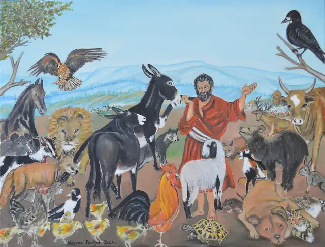
Λάδι σε καμβά 60*80 εκ.
Οι μύθοι του Αισώπου (6ος αιώνας π.Χ.) αποτελούν ένα λογοτεχνικό είδος που αναπτύχθηκε σε άριστο βαθμό στην πρώιμη Αρχαία Ελληνική Γραμματεία. Πρόκειται για μικρές, πνευματώδεις ιστορίες με συμβολισμούς και παραβολικό χαρακτήρα, όπου τα ζώα της ξηράς, τα πτηνά, τα ψάρια και τα έντομα κατέχουν τον πρωταγωνιστικό ρόλο. Η δραστηριότητα αυτής της πανίδας, μαζί με τις ανθρώπινες ιδιοτροπίες, ικανότητες και ελαττώματα, έχει σκοπό να διδάξει τα αποτελέσματα των αντίστοιχων ενεργειών σε κάθε περίπτωση. Γι' αυτό σε κάθε ιστορία υπάρχει ένα επιμύθιο, το οποίο είναι το καταληκτικό ηθικό δίδαγμα της αλληγορικής αυτής αφήγησης.
Κοκόρια κι αετός
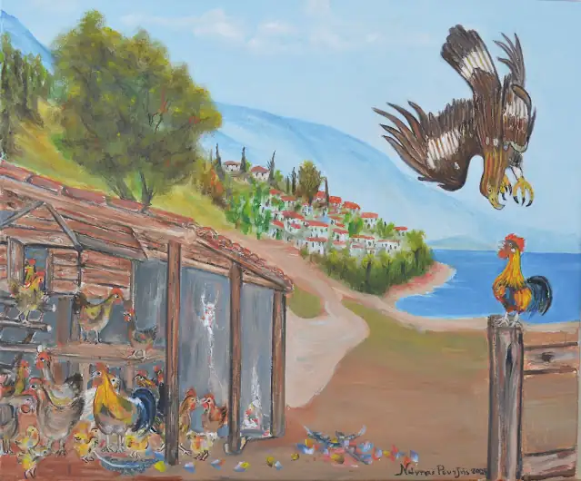
Λάδι σε καμβά 50*60 εκ.
Δυο κοκόρια τσακώθηκαν και ξεπουπουλιάστηκαν, διεκδικώντας την αρχηγία στο κοτέτσι. Ο ηττημένος μαζεύτηκε σε μια γωνιά του κοτετσιού, αποδεχόμενος το αποτέλεσμα. Ο νικητής, γεμάτος έπαρση, ανέβηκε σ' ένα ψηλό σημείο κι έκραζε μ' όλη του τη δύναμη. Τον άκουσε ένας αετός, χαμήλωσε προς το κοτέτσι και τον άρπαξε. Ο ηττημένος έμεινε, τελικά, ο κυρίαρχος του κοτετσιού. Όλες οι κότες ήταν πια δικές του.
*Η έπαρση πάντα πληρώνεται ακριβά, ενώ -πολλές φορές- η αποδοχή της αποτυχίας μπορεί και να βγει σε ανέλπιστο καλό.
Γάιδαρος και ονηλάτης
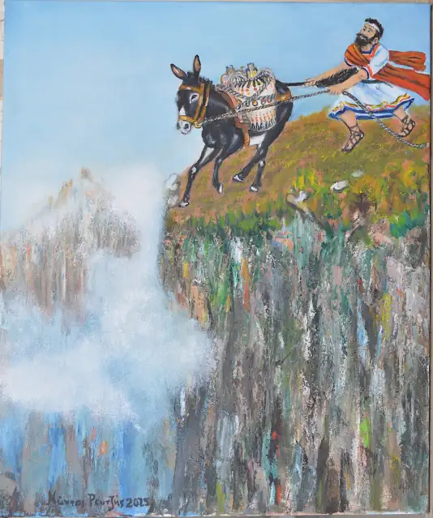
Λάδι σε καμβά 60*50 εκ.
Ένας γάιδαρος με τον ονηλάτη βάδιζαν σ’ ένα δρόμο. Ξαφνικά ο γάιδαρος ξεστράτισε και τραβούσε προς τον γκρεμό. Ο ονηλάτης τον τραβούσε με το καπίστρι του και απ’ την ουρά ακόμα για να τον συγκρατήσει, αλλά μάταιος κόπος. Στο τέλος, εγκατέλειψε την προσπάθεια της σωτηρίας λέγοντας: "Εντάξει, νίκα, αλλά αυτή η νίκη είναι για το κακό σου".
* Κάποιοι άνθρωποι φιλόνικοι επιδιώκουν τη νίκη, ακόμα κι αν αυτή αποδειχθεί επιζήμια για τους ίδιους.
Το ποντίκι και το λιοντάρι
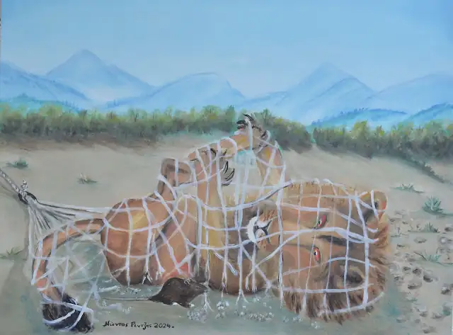
Λάδι σε καμβά 60*80 εκ.
Μια φορά ένα λιοντάρι, αφού είχε φάει καλά, πήγε να πιει νερό στο ποτάμι κι ύστερα ξάπλωσε εκεί κοντά, κάτω από ένα δέντρο κι αποκοιμήθηκε. Πιο κει ξετρύπωσε από τη φωλιά του ένα ποντικάκι. Άρχισε να σεργιανάει εδώ κι εκεί κι έφτασε και μέχρι το λιοντάρι. Άρχισε να χορεύει και να πηδάει πάνω του, μέχρι που το κοιμισμένο λιοντάρι ξύπνησε και θυμωμένο για το θράσος του ποντικού στην αρχή, όταν είδε πόσο μικρό ήταν το ζώο, γέλασε για την αναίδειά του, το άδραξε κι ήταν έτοιμο να το χάψει. Το ποντίκι, κατατρομαγμένο, τον παρακάλεσε να του χαρίσει τη ζωή και κάποτε ίσως θα του ανταποδώσει το καλό. Το λιοντάρι γέλασε και το άφησε. Μετά από καιρό, το λιοντάρι πιάστηκε σε θηλιά που τυλίχτηκε στον λαιμό του. Δέκα κυνηγοί έσφιξαν το σχοινί, του έδεσαν και τα πίσω πόδια και το έδεσαν σ’ ένα μεγάλο δέντρο. Οι κυνηγοί συνέχισαν τον δρόμο τους, για να πιάσουν κι άλλα μεγάλα ζώα. Το λιοντάρι μούγκριζε λυπητερά και το ποντίκι άκουσε τα μουγκρητά του. Έτρεξε, οδηγούμενο απ’ αυτά, έφτασε στο δεμένο ζώο κι έφαγε τα σχοινιά που το κρατούσαν αιχμάλωτο. Το λιοντάρι τίναξε τη χαίτη του, κούνησε τα πόδια και το σβέρκο του, φίλησε το ποντίκι κι έφυγαν μαζί.
* Για όλους έχει ο καιρός γυρίσματα. Κι οι πιο δυνατοί μπορούν να σωθούν από τους πιο αδύνατους.
Αετός – Λαγός – Χελώνα
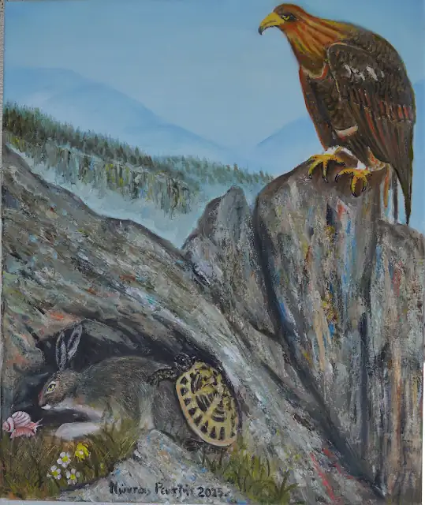
Λάδι σε καμβά 60*50 εκ.
Πολλές φορές διαφορετικά ζώα αναγκάζονται σε συμπεριφορές αντίθετες του είδους τους κάτω από την πίεση κοινού κινδύνου.
Η αλεπού και τα σταφύλια
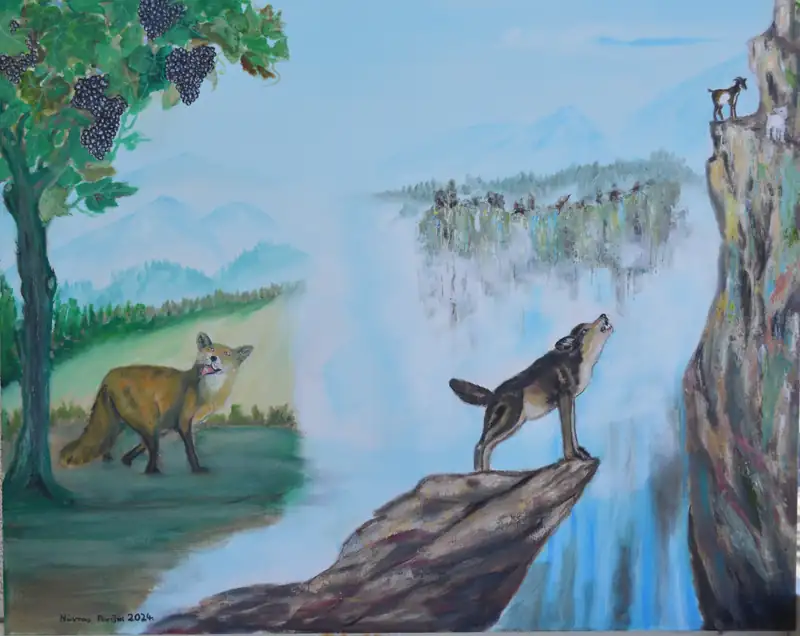
Λάδι σε καμβά 80*100 εκ.
Μια αλεπού δεν είχε βρει τίποτα να φάει για μέρες. Έψαχνε, κοίταζε δεξιά και αριστερά, τίποτα. Καθώς προχωρούσε, η ματιά της έπεσε σε μια κληματαριά. Κάτω από τα καταπράσινα φύλλα της κρέμονταν πολλά τσαμπιά σταφύλια. Ρόγες τροφαντές και κεχριμπαρένιες σε προκαλούσαν να τις απολαύσεις. Ανασηκώθηκε, προσπαθώντας να τις αδράξει, να κόψει ένα τσαμπί, ό,τι κατάφερνε. Προσπάθησε πολύ, αλλά δεν κατάφερε να πιάσει τα σταφύλια. Παρηγορήθηκε όμως λέγοντας: «Μπα, παλιοστάφυλα είναι, άγουρα». Έτσι μουρμούρησε και απομακρύνθηκε άπρακτη.
*Έτσι οι άνθρωποι, πολλές φορές, όταν θέλουν κάτι πολύ και δεν το καταφέρνουν, το απαξιώνουν.
Το κατσικάκι κι ο λύκος
Μια φορά κι έναν καιρό ένα κατσικάκι ανέβηκε πάνω σε ένα βράχο και από ψηλά όλα του φαίνονταν πιο μικρά απ' ό,τι ήταν στην πραγματικότητα. Ανάμεσα στους περαστικούς, εμφανίστηκε κι ένας λύκος. Το κατσικάκι, σίγουρο πως δεν κινδυνεύει εκεί ψηλά που βρισκόταν, άρχισε να κοροϊδεύει τον λύκο. Εκείνος, σήκωσε το χοντρό σβέρκο του, κοίταξε προς τα πάνω και γέλασε: "Ας ήσουν αλλού και τα λέγαμε", γρύλισε. Το κατσικάκι γέλασε κι εκείνο περιπαιχτικά κι ο λύκος του είπε: "Δεν με κοροϊδεύεις εσύ, αλλά ο τόπος".
*Μερικοί άνθρωποι εκμεταλλεύονται τη θέση τους και... κοκορεύονται, κάνουν τον καμπόσο!
Ποντικοί και γάτα
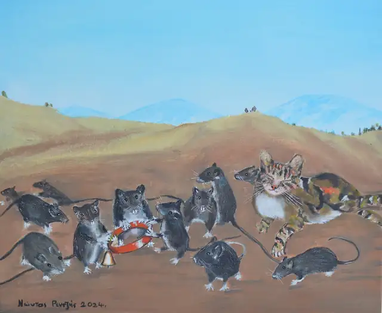
Λάδι σε καμβά 50*60 εκ.
Μια φορά οι ποντικοί ενός σπιτιού έκαναν συμβούλιο και αποφάσισαν με έναν απλό τρόπο να γλυτώσουν από την γάτα που τους αφάνιζε. Έφτιαξαν λοιπόν ένα κολλάρο με κουδουνάκι, ώστε να ακούνε τη γάτα άμα έρχεται και να κρύβονται. Όμως το έξυπνο αυτό σχέδιο είχε μια λεπτομέρεια που το ακύρωνε.. Ποιος ποντικός θα πήγαινε να περάσει το κολλάρο στη γάτα…
*Ακόμα και τα πιο καλά μελετημένα σχέδια κρίνονται από τις “λεπτομέρειες”
Κόρακας και αλεπού
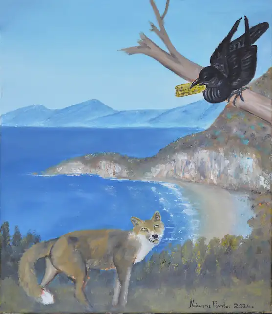
Λάδι σε καμβά 50*60 εκ.
Ένας κόρακας βρήκε ένα κομμάτι τυρί κι ετοιμαζόταν να το φάει. Μια αλεπού, που περνούσε, λιγουρεύτηκε το τυρί και, κολακεύοντας τον κόρακα, του είπε: "Έχεις πολύ ωραία φωνή και δυνατή. Θα μπορούσες να γίνεις και βασιλιάς των πουλιών με το επίσημο, μαύρο σου κουστούμι". Ο κόρακας, πιστεύοντας για αληθινά τα λόγια της, άνοιξε το στόμα του, το τυρί έπεσε, κι εκείνος άρχισε να κρώζει. Το σχέδιο της αλεπούς είχε πετύχει, αφού εκείνη απολάμβανε τώρα το τυρί του κόρακα.
* Όποιος έχει μυαλό, δεν πρέπει να πιστεύει τις κολακείες.
Λύκος και ερωδιός
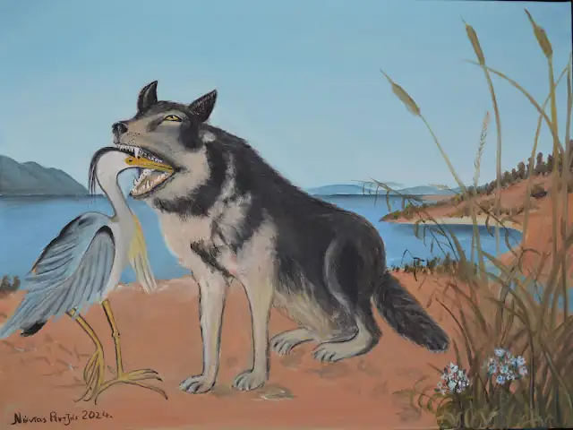
Λάδι σε καμβά 60*80 εκ.
Μια φορά, ένας λύκος κατάπιε ένα ολόκληρο κόκκαλο που του στάθηκε στον λαιμό. Άρχισε, λοιπόν, να ψάχνει κάποιον που θα μπορούσε να τον βοηθήσει. Υπέφερε πολύ, μέχρι που συνάντησε έναν ερωδιό, το ποταμίσιο πουλί με το μακρύ ράμφος. Το παρακάλεσε να τον ελευθερώσει από το κόκκαλο, τάζοντάς του μια μεγάλη αμοιβή. Ο ερωδιός έβαλε το κεφάλι του στο στόμα του λύκου, έφτασε με το μακρύ του ράμφος το κόκκαλο, το τράβηξε και το έβγαλε, περιμένοντας την αμοιβή που του είχε υποσχεθεί ο λύκος. Εκείνος του είπε: «Έβγαλες το κεφάλι σου γερό από το στόμα του λύκου. Γίνεται μεγαλύτερη αμοιβή από αυτή;»
* Η πιο μεγάλη ανταμοιβή κάποιας ευεργεσίας προς πονηρούς ανθρώπους είναι το να μην αδικηθούμε από αυτούς.
Γάιδαρος - Κόκορας – Λιοντάρι
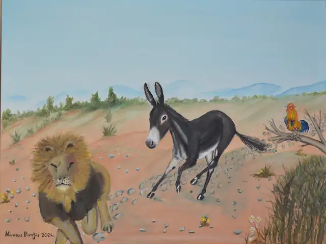
Λάδι σε καμβά 60*80 εκ.
Το λιοντάρι πήγε να κατασπαράξει τον γάιδαρο. Εκείνη τη στιγμή ο κόκορας έβγαλε μεγάλη φωνή, το λιοντάρι τρόμαξε και το ’βαλε στα πόδια. Ο γάιδαρος, βλέποντας το λιοντάρι να τρέχει, νόμισε πως τον φοβήθηκε κι άρχισε να το κυνηγά, θέλοντας να επιδείξει μεγάλη γενναιότητα. Μέχρι που ακούγονταν οι φωνές του κόκορα, το λιοντάρι έτρεχε.... Μόλις έπαψαν, γύρισε, άρπαξε τον γάιδαρο και τον έφαγε. Πριν ξεψυχήσει ο γάιδαρος, ψιθύρισε: "Δυστυχία μου! Τι ήθελα εγώ να κάνω τον γενναίο, αφού ποτέ δεν ήμουνα κι ούτε από σόι γενναίων καταγόμουν;".
* Οι άνθρωποι δεν είναι εύκολο να παρουσιαστούν ως κάτι που ποτέ δεν ήταν.
Ποντικός και βάτραχος
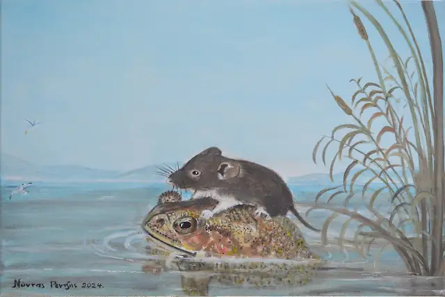
Λάδι σε καμβά 40*60 εκ.
Ένας βάτραχος φιλοξενούσε τον φίλο του τον ποντικό. Σκεπτόμενος επιπόλαια, του πρότεινε να δέσει το πόδι του με το δικό του. Άρχισε να τον ξεναγεί, μέχρι που έφθασαν στην όχθη της λίμνης κι ο βάτραχος, χωρίς να σκεφθεί πως ο φίλος του δεν μπορούσε να ζήσει στο νερό, βούτηξε, παρασύροντας τον ποντικό, που πνίγηκε. Ο βάτραχος απολάμβανε το κολύμπι του, ενώ ο ποντικός επέπλεε, συνδεδεμένος με το πόδι του βατράχου. Ένα αρπακτικό πουλί "βούτηξε" από ψηλά και τον άρπαξε για να τον φάει, βλέποντας, με έκπληξη, ότι το... γεύμα του περιελάμβανε και τον βάτραχο, που ήταν δεμένος με τον ποντικό. Ο Ξένιος Δίας τιμώρησε τον βάτραχο που δεν τίμησε τον φιλοξενούμενο.
* Η Θεία Δίκη υπάρχει και βλέπει τα πάντα έτσι ώστε και νεκρός κάποιος να δικαιωθεί, "τιμωρώντας" αυτόν που τον έβλαψε.
Ο σκύλος και η απληστία του
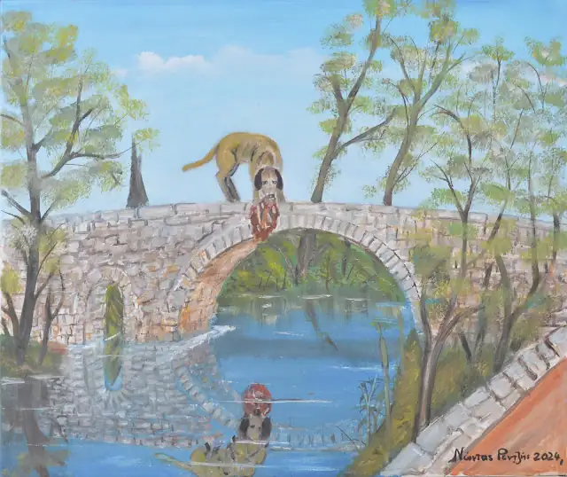
Λάδι σε καμβά 50*60 εκ.
Ένας σκύλος, κρατώντας στο στόμα του ένα κομμάτι κρέας, περνούσε από μια γέφυρα, πάνω από ένα ποτάμι. Με έκπληξη είδε... στο νερό... έναν άλλο σκύλο, που κρατούσε κι αυτός στο στόμα του ένα μεγαλύτερο –όπως του φάνηκε– κομμάτι κρέας. Όρμησε να το πάρει, αφήνοντας το δικό του να πέσει από το στόμα του στο ποτάμι και να παρασύρεται από το νερό.
*Αυτά παθαίνουν οι άπληστοι, που δεν εκτιμούν όσα έχουν και "κυνηγούν" τα περισσότερα, που, πολλές φορές, η απληστία τους και μόνο τα κάνει να μοιάζουν εύκολα αποκτήματα!
Διαμάχη (περί όνου σκιάς)
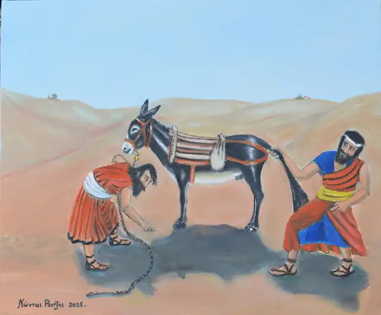
Λάδι σε καμβά 50*60 εκ.
Κάποτε ένας άνθρωπος νοίκιασε ένα γάιδαρο για να μεταβεί σε κάποιον προορισμό. Ο ονηλάτης προχωρούσε πεζός κρατώντας το ζώο από το σχοινί.
Στο δρόμο, επειδή ο ήλιος έκαιγε, σταμάτησαν να ξεκουραστούν και άρχισαν να μαλώνουν διότι ο γαϊδουριάρης με το επιχείρημα: «σου νοίκιασα το ζώο, δεν σου νοίκιασα και την σκιά του», δεν άφηνε τον άλλο να ξαπλώσει στη σκιά του γαιδάρου.
Στα δικαστήρια που κατέφυγαν δεν μπόρεσαν να βγάλουν απόφαση, και ο κόσμος διχάστηκε... Αποτέλεσε διαχρονικά αυτό το θέμα ένα άλυτο πρόβλημα...
Κάποτε μιλούσε ο Δημοσθένης στην Εκκλησία του Δήμου για σπουδαία εθνικά ζητήματα, αλλά οι ακροατές του δεν έδιναν προσοχή. Άλλοι κοιμούνταν, άλλοι συζητούσαν και κανένας δεν άκουγε. Ο Δημοσθένης ενοχλημένος σταμάτησε ξαφνικά να μιλά και άρχισε να τους διηγείται τον παλιό μύθο...
Όλοι άκουγαν με προσοχή. Έκοψε απότομα την διήγηση και το ακροατήριο σύσσωμο πετάχτηκε φωνάζοντας: «τι έγινε παρακάτω;» και ο Δημοσθένης: - «Αλίμονο στην Αθήνα, που οι κάτοικοί της δείχνουν περισσότερο ενδιαφέρον για τη "σκιά του γαϊδάρου" παρά για τα μεγάλα κρατικά προβλήματα...»
Ήταν η εποχή των μεγάλων πολέμων με τον Φίλιππο της Μακεδονίας (περί το 340 π.Χ.).
Ο Τράγος και η αλεπού
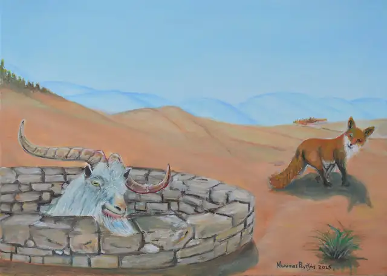
Λάδι σε καμβά 50*70 εκ.
Μια αλεπού έπεσε σ' ένα πηγάδι και δεν μπορούσε να βγει. Ένας τράγος που περνούσε, άκουσε τις φωνές της και τη ρώτησε αν το πηγάδι είχε καθαρό νερό. "Κατέβα να πιεις, καθαρό είναι", του είπε. Ο τράγος έπεσε στο πηγάδι, αλλά του ήταν αδύνατο να βγει από 'κει. Τότε του λέει η αλεπού: "Στάσου στον τοίχο του πηγαδιού, να πατήσω πάνω σου, να βγω εγώ και μετά θα τραβήξω και σένα". Ο τράγος έκανε όπως του είπε και η αλεπού βγήκε απ' το πηγάδι κι έφυγε.
*Οι προνοητικοί άνθρωποι πρέπει να εξετάζουν προσεκτικά πώς μπορεί να καταλήξει μια κατάσταση, να μελετούν τις συνθήκες κι ύστερα να πράττουν προς το συμφέρον τους.
Ο σκύλος και ο κόκορας
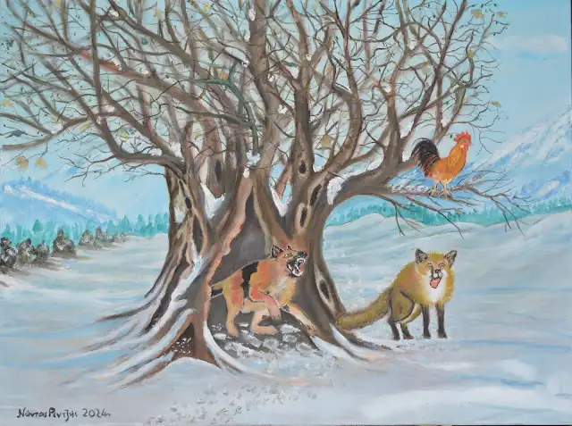
Λάδι σε καμβά 60*80 εκ.
Ο σκύλος και ο κόκορας έγιναν φίλοι και ταξίδευαν μαζί. Όταν νύχτωσε, κοιμήθηκαν σ’ ένα δέντρο, ο σκύλος στην κουφάλα του κι ο κόκορας κουρνιασμένος στα κλαδιά. Το πρωί ο κόκορας, με το που ξύπνησε νωρίς κατά τη συνήθειά του, άρχισε να λαλεί. Τον άκουσε μια αλεπού, πλησίασε και, με διάφορες κολακείες, προσπαθούσε να τον πείσει να κατεβεί, με σκοπό να τον φάει. Εκείνος, όμως, που κατάλαβε τις προθέσεις της, την προέτρεψε να φωνάξει τον θυρωρό να ξυπνήσει, για ν’ ανοίξει την πόρτα και τότε θα κατεβεί. Η αλεπού κινήθηκε κατά τις υποδείξεις του, φώναξε τον "θυρωρό" κι ο σκύλος ξύπνησε, την άρπαξε και την κατασπάραξε.
* Η ιστορία μάς δείχνει ότι όποιος δεν μπορεί ν’ αντιμετωπίσει τον εχθρό μόνος του, είναι καλό να ζητάει βοήθεια από κάποιον ισχυρότερο φίλο.
Λαγοί και βάτραχοι
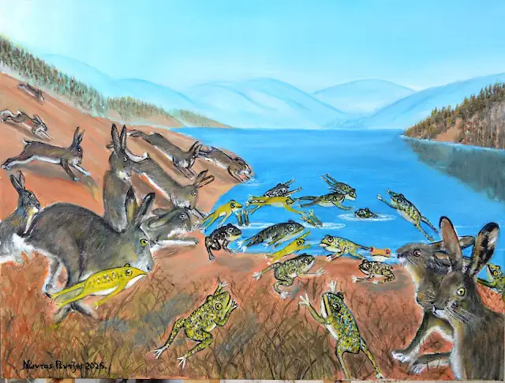
Λάδι σε καμβά 60*80 εκ.
Οι λαγοί έκαναν κάποτε συμβούλιο, για ν’ αποφασίσουν πώς μπορούν ν’ αντιμετωπίσουν τη δειλία τους. Ένιωθαν πως δεν αξίζει τέτοια ζωή, να τρέμει συνεχώς το φυλλοκάρδι τους. Αποφάσισαν, λοιπόν, να πέσουν στη λίμνη για να πνιγούν. Με το ποδοβολητό τους, καθώς έτρεχαν, τρόμαξαν τους βατράχους, που έσπευσαν να πηδήξουν πρώτοι στη λίμνη. Τότε, οι λαγοί, βλέποντας ότι υπήρχαν και άλλοι πιο δειλοί απ’ αυτούς, γύρισαν στις φωλιές τους.
* Οι άνθρωποι, όταν βλέπουν άλλους να βρίσκονται σε χειρότερη μοίρα από τη δική τους, παρηγορούνται, ενισχύονται και παίρνουν κουράγιο.
Μία εικόνα 5 ιστορίες
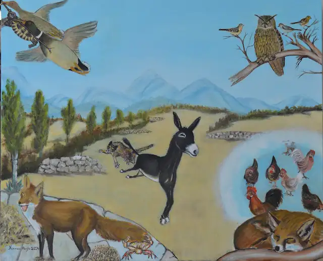
Λάδι σε καμβά 80*100 εκ.
α) Ο Γάιδαρος και ο Λύκος
Μια φορά κι έναν καιρό,
σε λιβάδι δροσερό,
ένας γάιδαρος καθόταν,
έτρωγε κι ευχαριστιόταν.
Μα για τύχη του κακή,
ένας λύκος φτάνει εκεί.
— Γεια χαρά σου, γαϊδαράκο.
— Βρε, καλώς τον φιλαράκο.
— Ξέρεις, άδεια είν’ η κοιλιά μου.
— Έλα βόσκησε κοντά μου.
— Τι να φάω, χόρτα εγώ;
— Βλέπεις τίποτα άλλο εδώ;
— Πώς δεν βλέπω, βλέπω εσένα.
— Ω! τι λες; θα φας εμένα;
— Ναι, κι αρχίζω παρευθύς.
— Στάσου, φίλε, να χαρείς.
Μιας κι απόφαση έχεις πάρει
να με φας τον φουκαριάρη,
μη τουλάχιστον θελήσεις
από τη μούρη μου ν’ αρχίσεις.
— Από τα πισινά θ’ αρχίσω.
Πάει ο λύκος από πίσω.
Δυο γερές κλωτσιές του φέρνει,
τούμπες τρεις ο λύκος παίρνει.
Με τα μούτρα του σπασμένα
και τα δόντια του βγαλμένα,
τρέχει ουρλιάζοντας στο δάσος
και ο γάιδαρος ο μπάσος
γκάρισμα τρανό αρχινά
κι αντηχούνε τα βουνά.
Ζαχαρίας Παπαντωνίου
β) Η χελώνα που ήθελε να πετάξει
Μια χελώνα παρακαλούσε αγριόπαπιες να τη μάθουν να πετάει. Εκείνες της επισήμαιναν πως αυτό δεν είναι στη φύση της και να μην το προσπαθήσει ποτέ. Η χελώνα, όμως, επέμενε στο αίτημά της, μέχρι που οι αγριόπαπιες της έδωσαν ένα κλαδάκι να πιαστεί και τη σήκωσαν ψηλά. Όταν άφησε το κλαδάκι για να πετάξει, χωρίς βοήθεια, έπεσε και σκοτώθηκε.
*Οι άνθρωποι οφείλουν να γνωρίζουν τις δυνατότητές τους, γιατί αλλιώς κινδυνεύουν σοβαρά.
γ) Ο Μπούφος
"Έπεσε σαν του μπούφου το πουλί". Ο μπούφος καλοπερνά εξαιτίας της πολλής βλακείας. Κοιμάται από το πρωί μέχρι το βράδυ, διότι είναι νυχτόβιο πουλί. Έχει το στόμα του ανοιχτό και του τρέχουν τα σάλια, μαζεύοντας πολλά, μικρά έντομα, τα μικρόπουλα βρίσκουν εύκολη λεία, μπαίνουν μέχρι μέσα στο στόμα του κι αυτός εύκολα τα... κατευθύνει στο στομάχι του. Κατά τη λαϊκή σοφία, ο μπούφος παρουσιάζεται ως ηλίθιος κι έτσι γεμίζει το στομάχι του. Ακόμα και το πολύχρωμο φτέρωμά του είναι εργαλείο της... "δουλειάς" του.
* Κάποιες αδυναμίες μπορεί να γίνουν πρόξενοι κέρδους.
δ) Τα όνειρα της αλεπούς
Ο νηστικός καρβέλια ονειρεύεται και η αλεπού ονειρεύεται κότες.
ε) Αλεπού και κάβουρας
Ο κάβουρας αποφάσισε, κάποτε, με την αλεπού να καλλιεργήσουν μαζί ένα χωράφι με σιτάρι. Η πονηρή αλεπού δεν πήρε μέρος καθόλου στην όλη διαδικασία. Καθόταν σε μια πλαγιά του κοντινού λόφου και επιτηρούσε, έχοντας και τη δικαιολογία - γι’ αυτή της τη στάση - έτοιμη: «Εγώ μένω εδώ, για να κρατώ τον βράχο, που βλέπεις εκεί ψηλά, μην κυλήσει και μας πλακώσει όσο θα δουλεύουμε.» Οι εργασίες ολοκληρώθηκαν στις αρχές του καλοκαιριού από τον κάβουρα μόνο, που, αφού χώρισε το σιτάρι απ’ τ’ άχυρα, κάλεσε την αλεπού να κατεβεί από τον λόφο στ’ αλώνι για τη μοιρασιά. Η πονηρή τον ρώτησε: «Θέλεις να πάρεις εσύ τα άχυρα κι εγώ το σιτάρι ή να πάρω εγώ το σιτάρι κι εσύ τα άχυρα; Πάρε ό,τι προτιμάς.» Ο κάβουρας καθυστερούσε την απάντηση, αποσβολωμένος από την πονηριά της. Τότε η αλεπού προχώρησε σε άλλη πρόταση. Του έδειξε ένα σημείο σε μεγάλη απόσταση και του είπε: «Θα πάμε εκεί, θα τρέξουμε προς το αλώνι και όποιος φτάσει πρώτος θα πάρει ό,τι θέλει.» Ο κάβουρας, αφού είδε κι απόειδε, ελπίζοντας μόνο σ’ ένα θαύμα ως προς τη δική του νίκη, δέχτηκε. Όσο έτρεχαν από το σημείο προς το αλώνι, η αλεπού, σίγουρη για τη δική της νίκη, ονειρευόταν το κέρδος της, όλο το σιτάρι δηλαδή, που της το εξασφάλιζε η μεγάλη αφέλεια του κάβουρα. Φτάνοντας στο αλώνι, γύρισε ν’ απολαύσει - όπως πίστευε - τον αργοκίνητο κάβουρα να προσπαθεί να φτάσει. Όμως μια φωνή πίσω της - αυτή του κάβουρα - την έκανε να χάσει την… απόλαυση! Ο κάβουρας είχε γραπωθεί από τον σωρό του σιταριού, μιας και από την ώρα που ξεκίνησαν τον αγώνα δρόμου είχε πιαστεί από την ουρά της αλεπούς.
* Δεν πρέπει ο άνθρωπος να επαναπαύεται στη δική του εξυπνάδα και πονηριά, γιατί πάντα θα υπάρχουν πιο έξυπνοι, πιο πονηροί, πιο ικανοί.